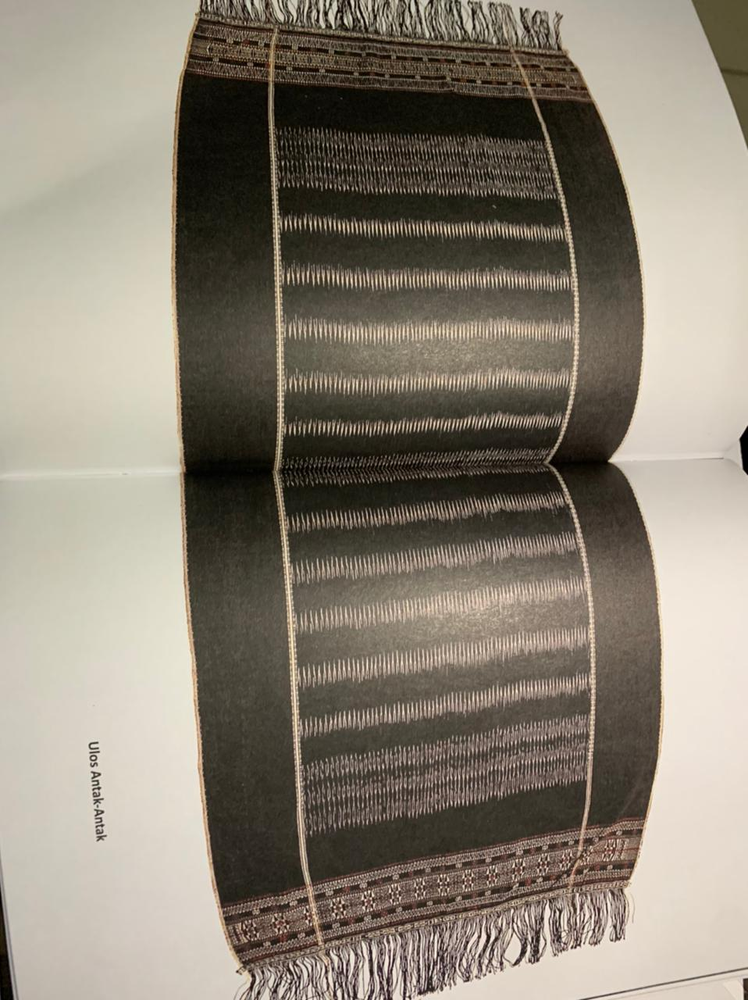

 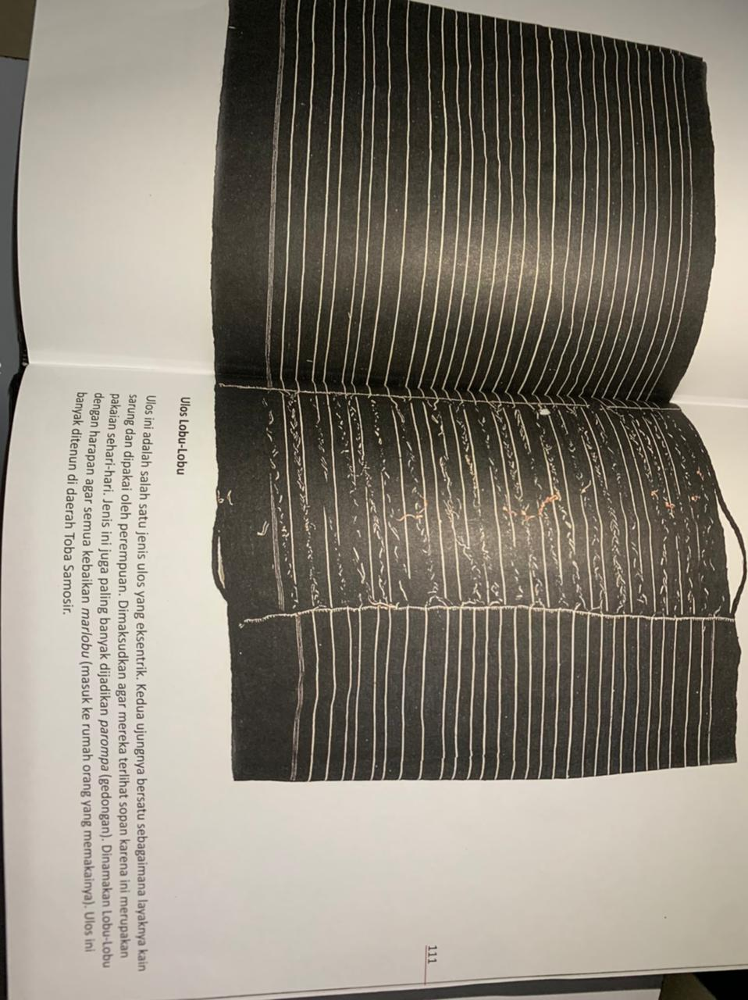
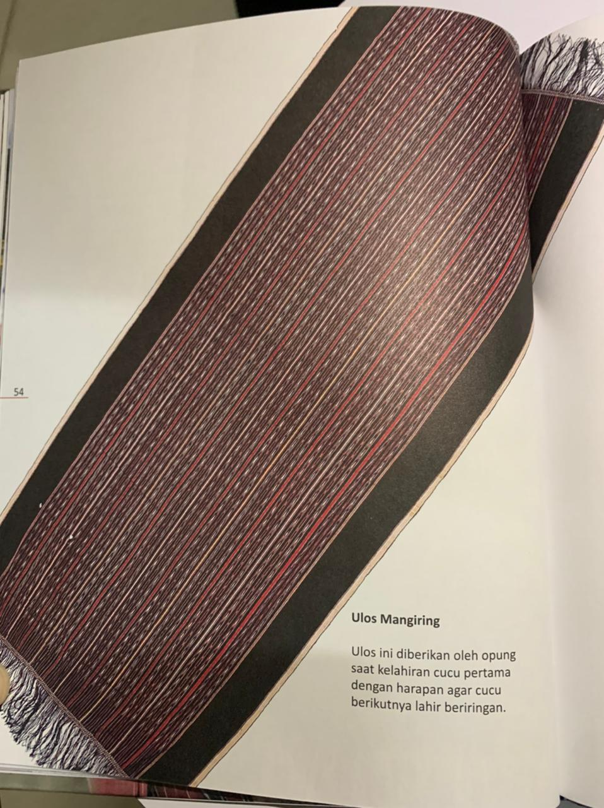
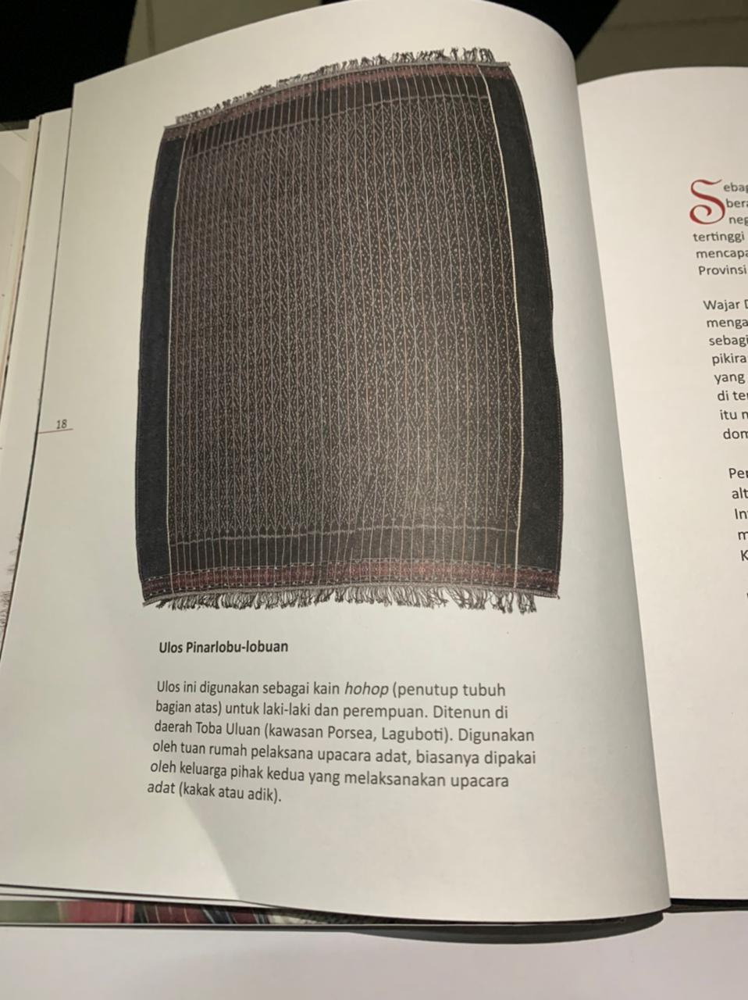
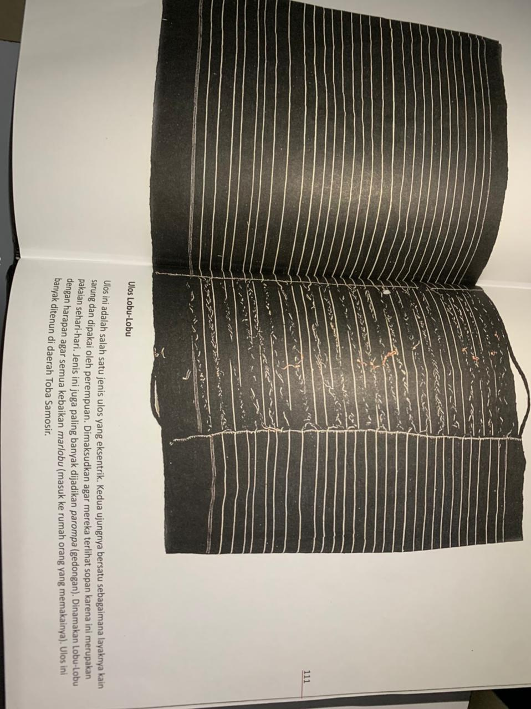
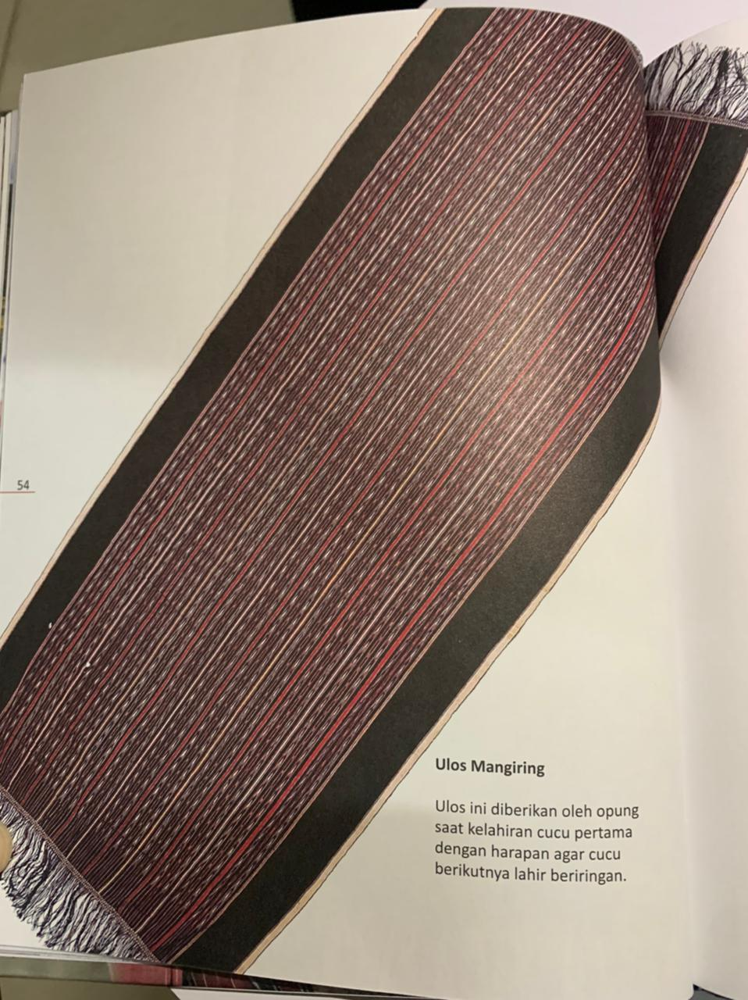
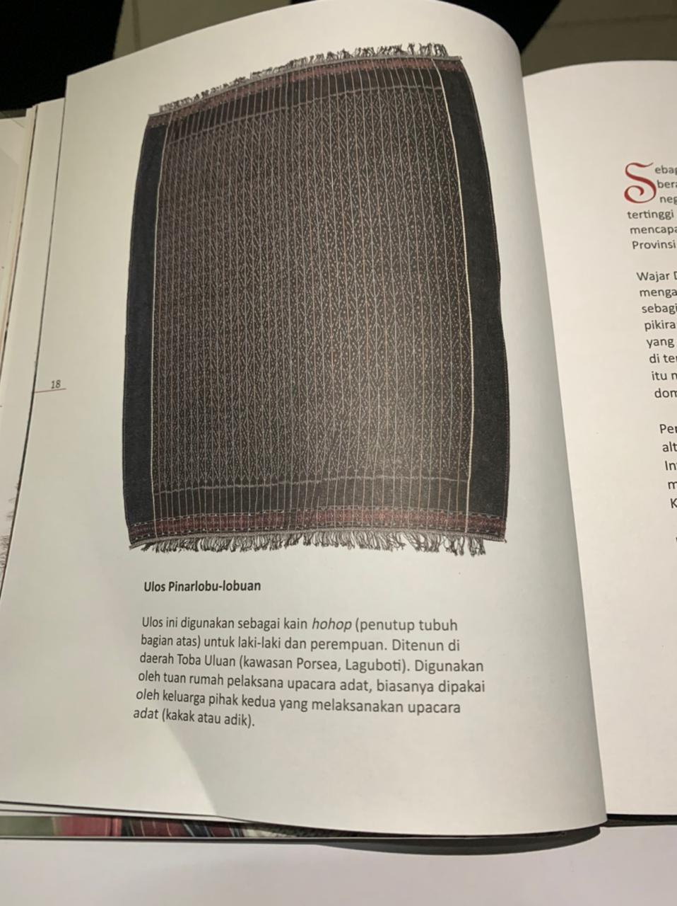

 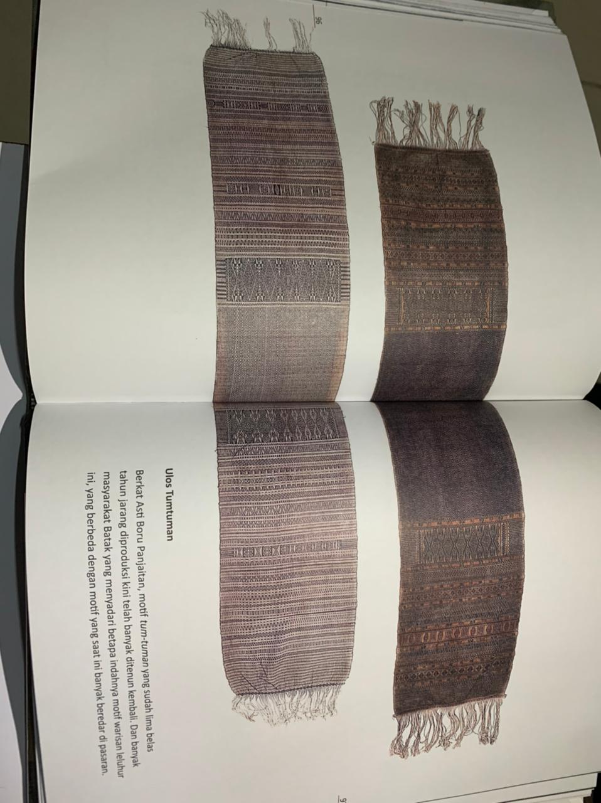
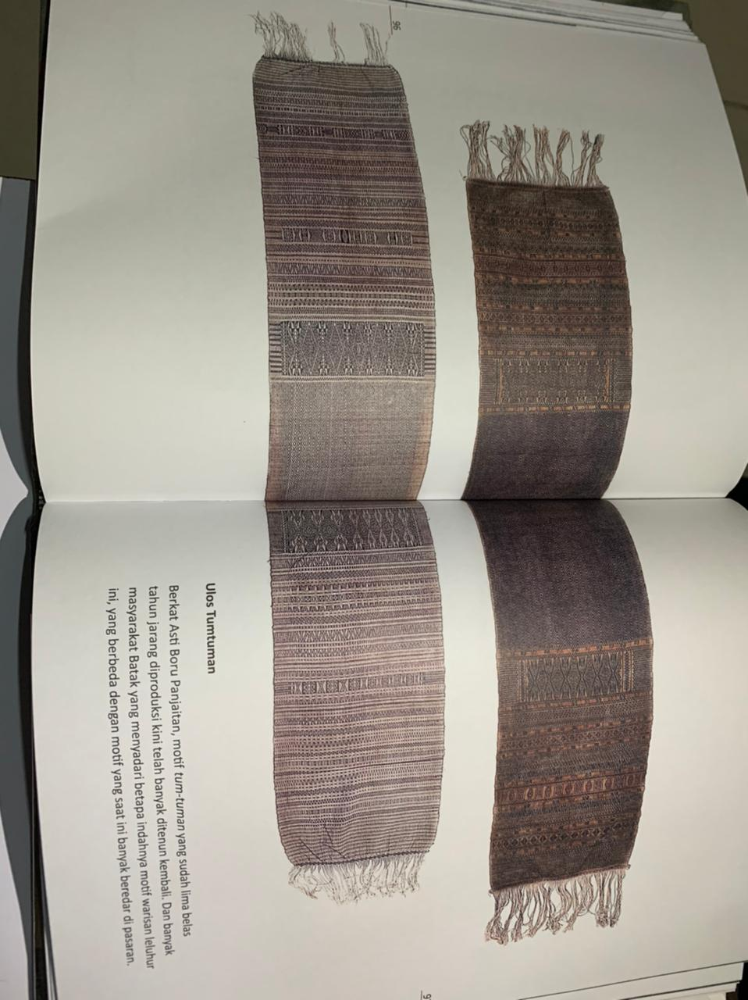
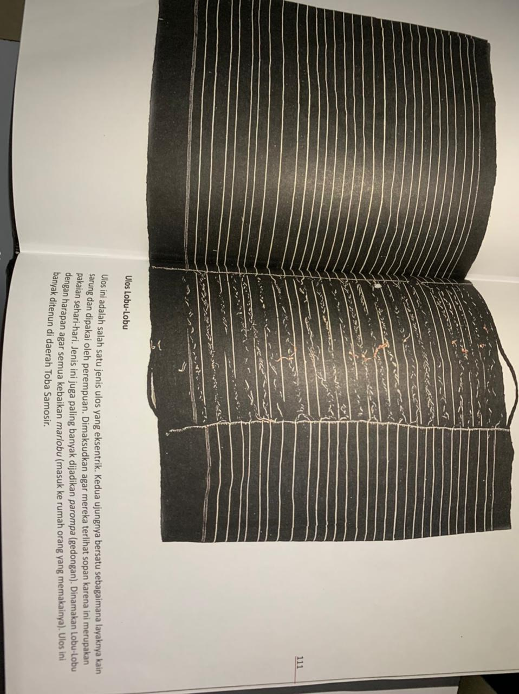
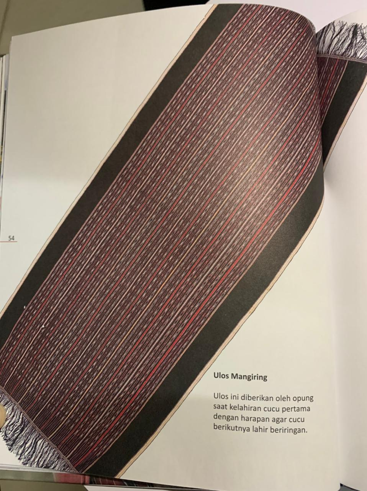
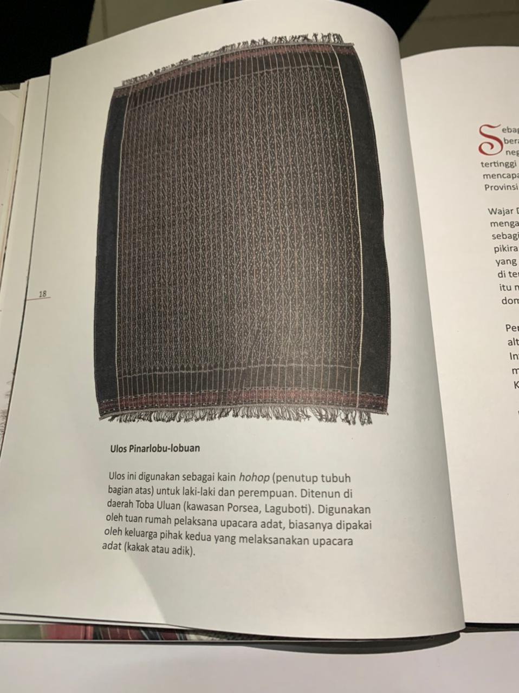
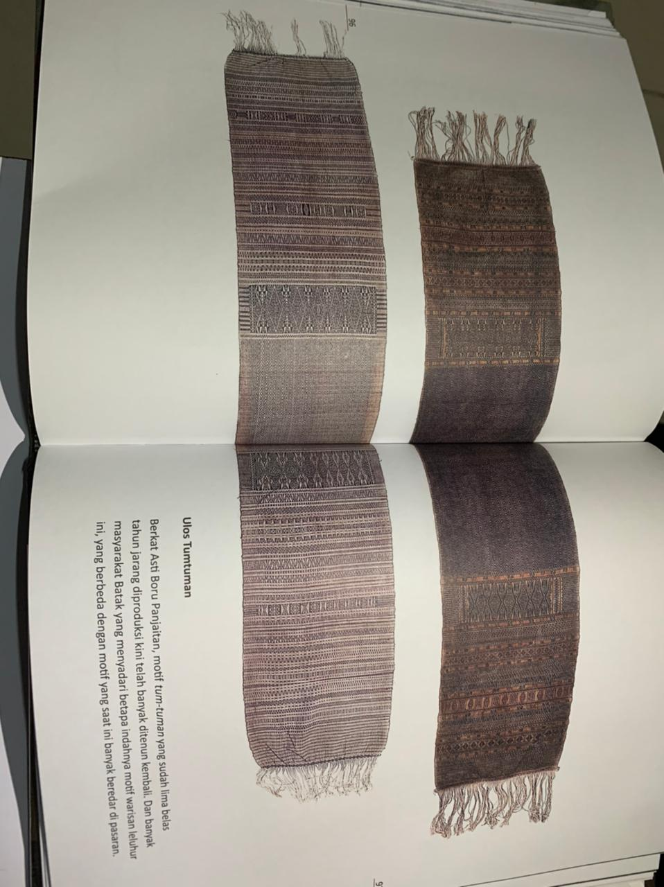
Berdasarkan Kegunaannya, ulos Batak terdiri atas beberapa yaitu:
- • Ulos Pasu-pasu (Ulos Berkat) diberikan saat penyampaian doa berkat.
- • Ulos Pansamot adalah ulos yang diberikan orang tua pengantin perempuan kepada orang tua pengantin laki-laki.
- • Ulos Hela (Menantu) diberikan orang tua pengantin perempuan kepada pengantin.
- • Ulos Saput (Pembalut) diberikan kepada orang meninggal, dan diberikan oleh keluarga istri.
- • Ulos Tujung (Penutup Kepala) dikenakan kepada suami/istri yang ditinggak mati oleh pasangan hidupnya.
- • Ulos Parhehe adalah ulos yang membangkitkan semangat dan dikenakan pada bahu.
- • Ulos Pargomos sebagai tali dikepala.
- • Ulos Parhibas (Sikap yang siap siaga) diikat di pinggang.
- • Ulos Pangapul (Penghiburan) diberi kepada orang yang berdukacita.
- • Ulos Bulang-bulang ulos yang diberikan kepada pemimpin atau orang yang berjasa.
- • Ulos Pargomgom ulos yang diberikan seorang oppung kepada cucunya.
- • Ulos Mulagabe yang diberikan orang tua istri (hula-hula) kepada menantu dan putrinya saat menunggu kelahiran cucunya.
- • Ulos Holong (Kasih) ulos Pemberian sebagai sarana untuk mendoakan pengantin.
Kegunaan Ulos
Berikut ini adalah beberapa nilai tradisional Ulos dalam Budaya Batak :- Upacara kelahiran : Ulos Ragidup, Bintang Maratur, Mangiring, Sadum.
- Dalam tradisi Batak, sebuah keluarga muda yang sedang menantikan kelahiran anak pertama mereka akan mengadakan upacara khusus untuk memberikan ulos kepada calon ibu yang sedang hamil tujuh bulan, yang disebut “Mambosuri boru”. Upacara ini merupakan perayaan untuk menyambut bayi yang akan datang dan berdoa untuk kesehatan ibu dan anak yang diharapkan. Nama ulos khusus untuk acara ini diberi nama Ragidup.
- Ulos ini diberikan oleh orang tua calon ibu, bersamaan dengan makanan khusus yang disebut dekke, yaitu ikan mas yang dimasak dengan bumbu dan rempah khas Batak. Dalam jangka waktu 2 minggu sampai 2 bulan setelah bayi lahir, upacara lain diadakan untuk merayakan kedatangan bayi baru lahir. Keluarga dari pihak akan menyiapkan Ulos Bintang Maratur Ulos jenis ini artinya orang tua akan diberikan Ulos Sadum, untuk menggendong si bayi.
- Upacara pernikahan : Ragihotang, Ragidup, Sadum.
- Dalam upacara perkawinan Batak, Ulos Ragihotang diberikan oleh orang tua mempelai wanita kepada orang tua mempelai laki-laki, Ulos Ragidup diberikan kepada orang tua, Ulos Sadum diberikan kepada kakak laki-laki mempelai laki-laki dan juga saudara laki-laki dari pihak ayah.
- Upacara kematian: Sibolang, Ragidup
- Dalam upacara kematian suku Batak, Ulos yang diberikan berbeda-beda menurut umur kematian. Dalam kematian muda, ulos yang diberikan adalah ulos” paroling-olangan”. Dalam kematian menikah muda, Ulos Sibolang diberikan. Dalam kematian tua, Ulos Ragidup adalah diberikan.
- Upacara perayaan khusus: Sadum
- Dalam perayaan khusus seperti wisuda, pembaptisan, dan penghijauan rumah adat Batak orang-orang biasa mengadakan upacara adat Batak. Dalam upacara semacam ini, Ulos Sadum dihadirkan.
Source: https://www.del.ac.id/people/arlinta/files/09a_artepolis_paper.pdf